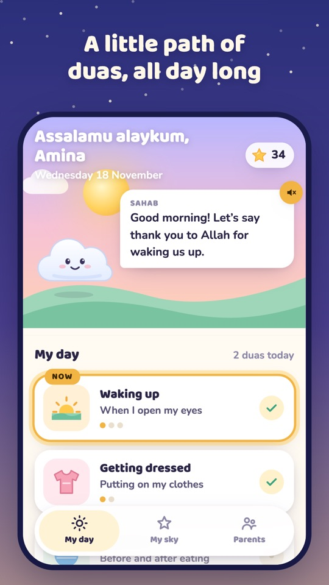
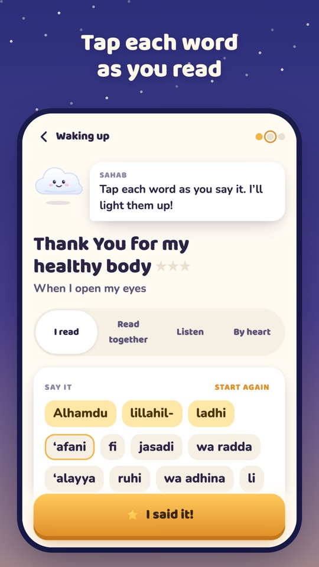
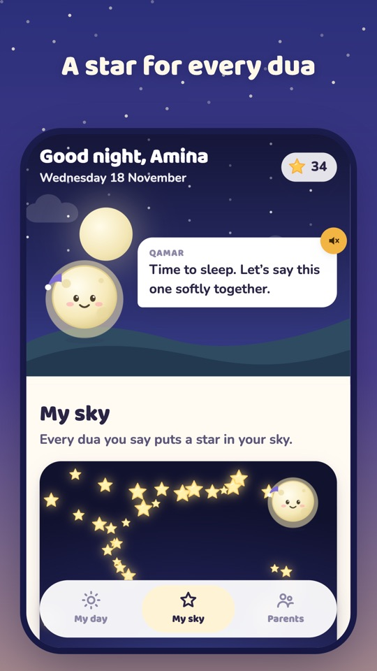
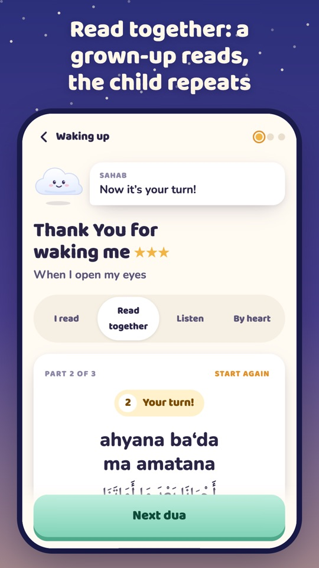

Dua Day
Everyday duas for children
Everyday duas for children: the day as a little path (waking up, getting dressed, food, going out, the masjid, bedtime), three gentle friends, read-along word taps, a calm Arabic voice for duas, stars and stickers. 44 duas and 26 surahs from Juz Amma in 10 languages. No ads, works offline.




What's new
- 1.0.2The Back button closes an open card and asks before closing the app.
- 1.0.1The first hello fits the time of day.
- 1.0Calm, clearer voices for every dua. Works on tablets and Chromebooks.
- 0.1.0First test.
Test versions on Google Play.
Contact
Questions or ideas: support@calmappslab.com. We usually reply within two working days.
Common questions
Where do the duas come from? Each dua shows its source (Sahih al-Bukhari, Sahih Muslim, Sunan Abi Dawud, Jami‘ at-Tirmidhi, Sunan Ibn Majah), checked on sunnah.com. Duas graded weak were left out. The Quran text is from Tanzil.net, unchanged.
Is the voice a real reciter? No. The duas are read by a computer voice, checked word by word. The Quran is shown as text only, without a generated voice. Parents can switch all voices off in “For parents”.
Does it need the internet? No.
Is there advertising? No, never.
How do I open the parent settings? Tap “Parents” and answer the grown-ups question.
Privacy
The app collects no data. Read the privacy policy.